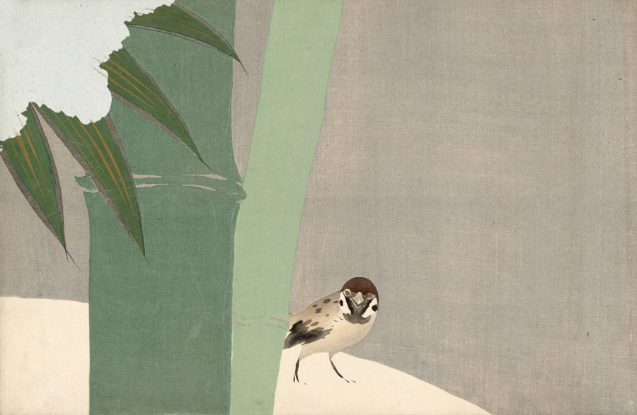

作品名 「雪中竹」
花言葉 「忠誠」「忠義」「強さ」「不動」「節度」
竹
「忠誠」
一部のタケ類は周期的に開花し一斉に枯れることが知られています。その周期はとても長く、マダケの場合は120年周期であると推定されています。「節度」や「節操のある」という花言葉は、竹にも節があることから生まれた花言葉。竹は、冬でも枯れないため、松などと一緒に正月の飾りに使われたりします。松竹梅という言葉からも分かる通り、縁起の良いものとしても認知されている植物。
雪中竹
神坂雪佳
神坂 雪佳は、近現代の日本の画家であり、図案家。京都に暮らし、明治から昭和にかけての時期に、絵画と工芸の分野で多岐にわたる活動をした。画面を大胆につらぬく緑の竹と白い雪、そしてひょっこり顔を出す可愛らしいスズメ。「百々世草」は1909年から翌年にかけて刊行された木版色摺絵本で、「雪中竹」を含む全60図からなります。
| 作品名 | 雪中竹 |
| 作者 | 神坂雪佳 |
| 制作年 | 1909年 |
| 寸法 | 46cm × 30.2cm |
| 所蔵 | アムステルダム国立美術館所蔵 |